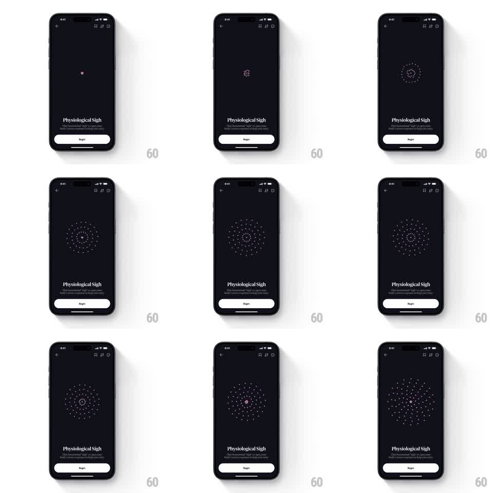

Media
Frame-by-frame

Rebuild this animation 1:1: How We Feel's exercise start screen - on a near-black screen, concentric rings of small pink dots breathe outward from a center icon in a slow radial stagger behind the exercise title and Begin button.

Rebuild this animation 1:1: How We Feel's exercise start screen - on a near-black screen, concentric rings of small pink dots breathe outward from a center icon in a slow radial stagger behind the exercise title and Begin button. ## Integration Integration: stack-agnostic spec - springs given as stiffness/damping, timed motions as duration + curve; map every value to your framework and animation library of choice. ## Scene Dark navy-black screen. Top-left back chevron, top-right utility icons. Center: a small circle icon ringed by 4 to 5 concentric rings of tiny pink dots. Bottom third: exercise title "Physiological Sigh" in serif, a two-line description, and a full-width white Begin button. ## Motion spec Pattern: breathing radial dot rings. - The dot rings expand and contract on a ~4s loop, matched to a breath: rings grow outward (each ring's radius +12-18%) over 2s on an ease-in-out, then return over 2s. - The stagger is radial: the innermost ring moves first, each outer ring delayed ~120ms, so the expansion reads as a ripple leaving the center. - Dots also fade with the breath: opacity 0.5 at contracted, 1.0 at expanded. - The center icon pulses in counter-phase (slightly smaller at full expansion) so the whole graphic feels like one exhale/inhale organism. - Title, description, and Begin button are static; only the dot field breathes. ## Calibration - 4s cycle minimum - faster turns a calming breath into a loading spinner. - Keep dot size constant; only radius and opacity animate. Scaling dots reads as confetti. ## Reduced motion Static fully-expanded rings at 0.8 opacity. ## Don't miss - The stagger direction is outward-from-center on expansion and inward on contraction - reversing it inverts the breath metaphor. - Dots are pink against near-black; do not recolor to the quadrant palette.